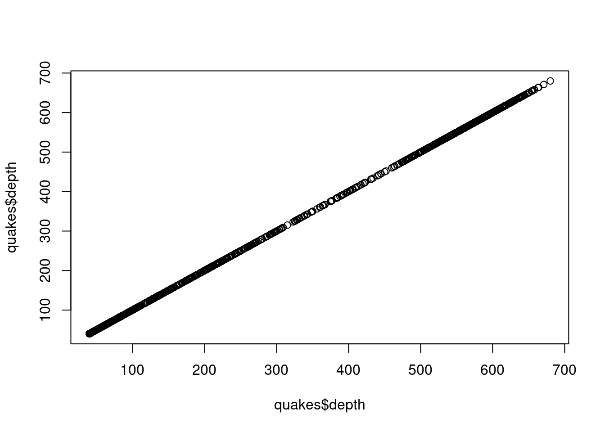
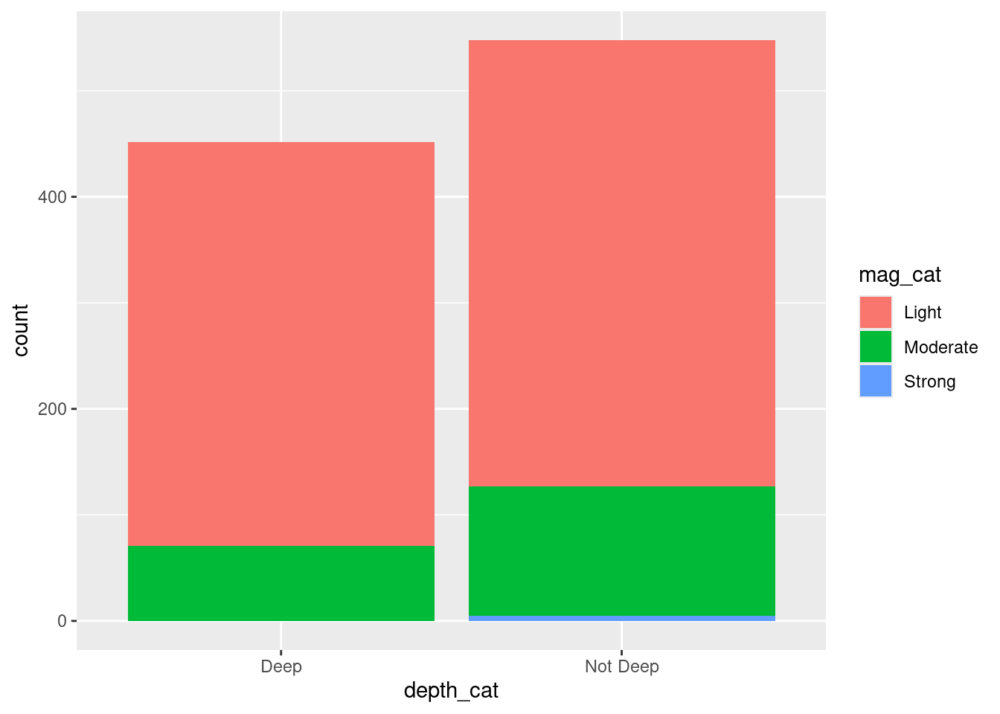
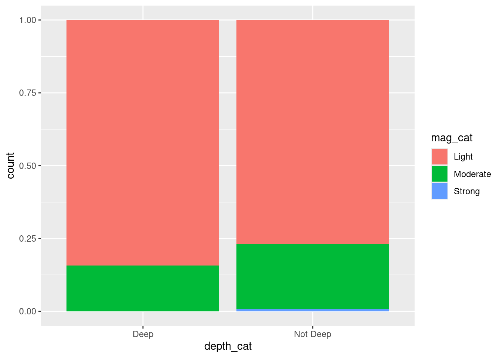

Describing Relationships
Learning objectives
- Describe the relationship between two numeric variables, using the Pearson’s correlation coefficient.
- Describe the relationship between a numeric and a categorical variable, reporting measures of center and spread for each category. 3. Describe the relationship between two categorical variables, using frequencies and relative proportions/percentages.
- Discuss how to represent more than two variables on the same visualization.
In this worksheet, we will use ggplot and some more geom functions to explore relationships: describing at least 2 variables.
Start your workflow by uploading the tidyverse package which contains the ggplot functions:
We will consider the built-in dataset quakes again. It contains information about earthquakes occurring near Fiji islands since 1964. To refresh our memory, let’s take a look:
The type of plots we will use to explore relationships depends on the types of the variables involved.
1. Comparing two numeric variables
When comparing two numeric variables, we may wonder if high values on one variable are associated with high/low values for another variable.
a. Using a scatterplot
The relationship between two numeric variables is typically displayed using a scatterplot with geom_point(). For example, we can investigate if the depth of an earthquake affects the magnitude of that earthquake. In this context, we are considering the depth of an earthquake as an explanatory variable for the magnitude, the response variable. By convention, the response variable is represented on the y-axis and the explanatory on the x-axis.
# Define the ggplot and the dataframe
ggplot(data = quakes) +
# Use geom_point and define mapping aesthetics: x = explanatory, y = response
geom_point(aes(x = depth, y = mag)) No matter how deep the earthquake is, the magnitude seems to vary greatly.
Try it! Does the magnitude of an earthquake affects how many stations reported that earthquake? Identify what the explanatory and response variables are in this context and make an appropriate plot. What do you notice in this plot?
# Define the ggplot and the dataframe
ggplot(data = quakes) +
# Use geom_point and define mapping aesthetics
geom_point(aes(x = mag, y = stations)) In this context, we are considering the magnitude of an earthquake as an explanatory variable for the number of stations that reported the earthquake, the response variable. It looks like the higher the magnitude is, the higher number of stations reported that earthquake.
b. Reporting correlation
Correlation describes the strength of a (linear) relationship between two variables. With the function cor, we refer by default to the Pearson correlation coefficient which takes values between -1 (strong negative correlation) and 1 (strong positive correlation) with 0 indicating that there is no correlation.
## [1] -0.2306377The correlation between the depth and magnitude of an earthquake is not strong (as shown in the scatterplot above).
What about these perfect relationships:
## [1] 1
## [1] -12. Comparing a numeric variable and a categorical variable
When comparing a numeric variable across categories, we may wonder if the distribution of the numeric variable (center, spread, shape) is about the same across all categories or not.
Let’s consider depth as a categorical variable:
# Create a new categorical variable in a new object
new_quakes <- quakes |>
# Create a variable
mutate(depth_cat = case_when(
depth <= 70 ~ "Shallow",
depth > 70 & depth <= 300 ~ "Intermediate",
depth > 300 ~ "Deep"))We already compared the magnitude of an earthquake to the depth, but we can take a different perspective to compare magnitude on categories of depth.
a. Using grouped boxplots
The most convenient way (using R) to compare the distribution of a numeric variable across categories is to use grouped boxplots.
Let’s take a different approach to investigate if the depth affects the magnitude of an earthquake by considering depth at 3 different levels. In this context, the explanatory variable would be categorical (deep, intermediate, shallow) and the response variable would be numeric:
# Define the ggplot and the dataframe
ggplot(data = new_quakes) +
# Use geom_boxplot and define mapping aesthetics: x = explanatory, y = response
geom_boxplot(aes(x = depth_cat, y = mag))The magnitude seems to be slightly lower on average for the deep earthquakes and slightly higher compared to earthquakes that were in shallow depth. There is a lot of overlap between these three boxplots though.
We discussed in the previous worksheet that a boxplot only represent 5 numbers about a distribution and we miss information about the frequency of each value. We can add the data on a boxplot with geom_jitter:
ggplot(data = new_quakes) +
geom_boxplot(aes(x = depth_cat, y = mag)) +
# Add the data
geom_jitter(aes(x = depth_cat, y = mag))How does “seeing the data” affect or doesn not affect our comparison?
Seeing the data with geom_jitter adds more context with the distribution of individual points, helping us identify the number of earthquakes for each group, any gaps or extreme values that boxplots alone might hide.
Try it! Use a plot to compare the number of stations that reported the earthquakes depending on the magnitude level: split magnitude into light (4-4.9), moderate (5-5.9), strong (6-6.9). Improve this plot with 1) representing the magnitude levels with fill colors, 2) including the data points with geom_jitter with 20% transparency, 3) adding labels to the axes with relevant units. How does the number of stations compare across the 3 categories of magnitude?
# Define the ggplot and the dataframe
quakes |>
# Create a variable
mutate(mag_cat = case_when(
mag >= 4 & mag < 5 ~ "Light",
mag >= 5 & mag < 6 ~ "Moderate",
mag >= 6 & mag < 7 ~ "Strong")) |>
ggplot() +
# Use geom_boxplot and define mapping aesthetics
# x = explanatory, y = response
geom_boxplot(aes(x = mag_cat, y = stations, fill = mag_cat)) +
scale_fill_manual(values = c("Light" = "yellow",
"Moderate" = "orange",
"Strong" = "red")) +
geom_jitter(aes(x = mag_cat, y = stations), alpha = 0.2) +
labs(x = "Magnitude Level",
y = "Number of stations reporting the earthquake")There seems to be some important differences between the 3 magnitude levels with a lot of stations reporting the strong earthquakes, however, there were not many strong earthquakes overall.
b. Using grouped histograms
We need to be careful about grouped histograms. Let’s see why:
# Define the ggplot and the dataframe
ggplot(data = new_quakes) +
# Use geom_histogram and define mapping aesthetics
geom_histogram(aes(x = mag, fill = depth_cat),
binwidth = 0.1, center = 0.05)Ugly: don’t fill histograms per categories like that!
What if we create one histogram for each level of depth instead? We can easily do that with faceting:
# Represent the brain weight on the x-axis
ggplot(data = new_quakes) +
# Use geom_histogram and define mapping aesthetics, x = response
geom_histogram(aes(x = mag), binwidth = 0.1, center = 0.05) +
# Facet per category
facet_wrap(~depth_cat)Try it! How could we improve the grouped histograms above?
ggplot(data = new_quakes) +
# Use geom_histogram and define mapping aesthetics, x = response, fill = categories
geom_histogram(aes(x = mag, fill = depth_cat,
# Show proportion
y = after_stat(count / sum(count))),
# Different binwidth and center
binwidth = 0.2, center = 0.1) +
# Facet per category
facet_wrap(~depth_cat, ncol = 1) +
# show all graphs in 1 column (easier to compare histograms vertically)
labs(title = "Comparing the distribution of magnitude for each category of depth",
x = "Magnitude (Richter scale)",
y = "Proportion of earthquakes")Few things to improve the plot: 1) adjust the binwidth and center to have at least 10 bins but not too many, 2) add colors per categories, 3) show proportions instead of counts (however, we lose the information about how many earthquakes were in each category, 4) align the histrograms vertically, 5) add labels.
c. Reporting center and spread for each category
We briefly introduced the tidyverse function called group_by: combined with the summarize function that allows us to find summaries by groups:
new_quakes |>
# Split the data in groups
group_by(depth_cat) |>
# Summarize per group
summarize(mean_mag = mean(mag),
sd_mag = sd(mag))All in one table!
d. Using a special case of bar graph
We can represent the mean value of a numeric variable for each category using a bar with a stat option:
# Define the ggplot, the dataframe, and mapping aesthetics
ggplot(data = new_quakes, aes(x = depth_cat, y = mag)) +
# By default a bar represents a count but we can change what the height of a bar represents
# For example, represent a statistic using the mean function
geom_bar(stat = "summary", fun = "mean")But as we mentioned before, we should not only focus on a typical value for a numeric variable but also consider how spread out the values are. We can add error bars to our plot with geom_errorbar() (representing +/- 1 standard deviation from the mean):
ggplot(data = new_quakes, aes(x = depth_cat, y = mag)) +
geom_bar(stat = "summary", fun = "mean") +
# Add error bars
geom_errorbar(stat = "summary", fun.data = "mean_se")The mean magnitude seems to be lower for the deep earthquakes and higher for the shallow depth. There does not seem to be a huge difference in the variation of magnitude across the categories of depth.
Try it! Represent the mean number of stations reporting an earthquake for each level of magnitude (light, moderate, strong). Which level of magnitude has the highest number of stations on average? Which level of magnitude has the highest variation in the number of stations?
quakes |>
# Create a variable
mutate(mag_cat = case_when(
mag >= 4 & mag < 5 ~ "Light",
mag >= 5 & mag < 6 ~ "Moderate",
mag >= 6 & mag < 7 ~ "Strong")) |>
ggplot(aes(x = mag_cat, y = stations, fill = mag_cat)) +
# The height of a bar represents the mean
geom_bar(stat = "summary", fun = "mean") +
# Add error bars
geom_errorbar(stat = "summary", fun.data = "mean_se") +
# Adjust the label of the y-axis accordingly
labs(y = "Mean number of stations")The strong earthquakes had the highest number of stations reporting these earthquakes but also had the highest variation (certainly because there were not many cases of strong earthquakes: information we are missing in this graph).
3. Comparing two categorical variables
When comparing two categorical variables, we may wonder what are the most and least common categories of one variable for other categories of the other variable.
Let’s consider both depth and mag as categorical variables:
# Create a new categorical variable in a new object
new_quakes <- quakes |>
# Create new variables
mutate(depth_cat = ifelse(depth > 300, "Deep", "Not Deep"),
mag_cat = case_when(
mag >= 4 & mag < 5 ~ "Light",
mag >= 5 & mag < 6 ~ "Moderate",
mag >= 6 & mag < 7 ~ "Strong"))a. Using a stacked plot (not usually recommended)
We can create stacked bar plots that compares the distribution of two categorical variables by stacking their counts:
# Define the ggplot and the dataframe
ggplot(data = new_quakes) +
# Use `fill =` to differentiate between categories of magnitude
geom_bar(aes(x = depth_cat, fill = mag_cat)) 
It looks like there are mostly light magnitude across both levels of depth. When the different groups do not have the same size though, it can be difficult to compare across categories. Let’s try the side-by-side bar plot with position = "dodge":
b. Using a segmented bar plot (usually preferred)
We can display the relative distribution at each level with a segmented bar plot with the option position = "fill":
ggplot(data = new_quakes) +
# Use `fill =` to differentiate between categories of magnitude
geom_bar(aes(x = depth_cat, fill = mag_cat), position = "fill") 
Now we can see that the deep earthquakes has the highest proportion of light magnitude.
Try it! Swap the variables for x = and fill =. Does the graph look any different? Note that the default label for the y-axis is count. But what does it represent? Adjust the label for the y-axis in the segmented bar plot.
ggplot(data = new_quakes) +
# Use `fill =` to differentiate between categories of depth
geom_bar(aes(x = mag_cat, fill = depth_cat), position = "fill") +
labs(y = "Proportion of level of depth at each magnitude")This graph looks different. In this graph, we can see what all earthquakes of the strong magnitude occurred at a lower depth. However, remember that there weren’t many strong earthquakes in this dataset, so it is important to report frequencies along relative frequencies.
c. Reporting frequencies and relative frequencies
When reporting statistics about two categorical variables, we often include counts (frequencies) or proportions (relative frequencies). We can use the function table to find counts:
##
## Light Moderate Strong
## Deep 381 71 0
## Not Deep 421 122 5For example, out of the strong earthquakes, 0 were at a deep depth and 5 were not at a deep depth.
# Find proportions (from frequency table)
prop.table(table(new_quakes$depth_cat, new_quakes$mag_cat), 1)##
## Light Moderate Strong
## Deep 0.842920354 0.157079646 0.000000000
## Not Deep 0.768248175 0.222627737 0.009124088##
## Light Moderate Strong
## Deep 0.4750623 0.3678756 0.0000000
## Not Deep 0.5249377 0.6321244 1.0000000What’s the difference between these two tables? Can you associate each table with one of the two segmented bar plots above?
The first table shows proportions of the magnitude of earthquakes for each depth level: the proportions are calculated per row (first segmented bar plot). The second table shows proportions of the depth of earthquakes for each magnitude level: the proportions are calculated per column (second segmented bar plot).
4. Relationships with more than 2 variables
Visualizing relationships between more than two variables can be challenging, but it’s possible by incorporating additional visual elements. Some common strategies include:
Color: Differentiate categories or represent continuous variables through color gradients.
Facet: Recreate the same plot for different categories of one variable.
Size: Vary the size of points to indicate another numeric variable.
Shape: Use different shapes to represent categories, though this works best with a limited number of categories.
Alpha (Transparency): Adjust transparency to handle overlapping data points.
Try it! How does the magnitude and depth of an earthquakes affects the number of stations reporting an earthquake? Create an appropriate plot including these 3 variables.
# Example 1: 2 numeric (points) + 1 categorical (color)
ggplot(data = new_quakes) +
# Color by category of depth
geom_point(aes(x = mag, y = stations, color = depth_cat), alpha = 0.2) +
# Labels
labs(title = "Relationship between magnitude, depth, and the number of stations reporting an earthquake",
subtitle = "For 1,000 eathrquakes that occurred near the Fiji Islands since 1964",
x = "Magnitude (Richter scale)",
y = "Number of stations reporting",
color = "Depth")# Example 2: 2 numeric (points) + 1 categorical (color + facet)
ggplot(data = new_quakes) +
# Color by category of depth
geom_point(aes(x = mag, y = stations, color = depth_cat), alpha = 0.2) +
# Facet by category of depth
facet_wrap(~depth_cat) +
# Labels
labs(title = "Relationship between magnitude, depth, and the number of stations reporting an earthquake",
subtitle = "For 1,000 eathrquakes that occurred near the Fiji Islands since 1964",
x = "Magnitude (Richter scale)",
y = "Number of stations reporting",
color = "Depth") # Example 3: 2 numeric (points) + 1 categorical (shape)
ggplot(data = new_quakes) +
# Shape by magnitude
geom_point(aes(x = depth, y = stations, shape = mag_cat), alpha = 0.2) +
# Labels
labs(title = "Relationship between magnitude, depth, and the number of stations reporting an earthquake",
subtitle = "For 1,000 eathrquakes that occurred near the Fiji Islands since 1964",
x = "Depth (km)",
y = "Number of stations reporting",
shape = "Magnitude")# Example 4: 2 numeric (points) + 1 numeric (size)
ggplot(data = new_quakes) +
# Size by value of magnitude
geom_point(aes(x = depth, y = stations, size = mag), alpha = 0.2) +
# Labels
labs(title = "Relationship between magnitude, depth, and the number of stations reporting an earthquake",
subtitle = "For 1,000 eathrquakes that occurred near the Fiji Islands since 1964",
x = "Depth (km)",
y = "Number of stations reporting",
size = "Magnitude (Richter scale)")# Example 5: 1 numeric and 1 categorical (grouped boxplot) + 1 categorical (facet)
ggplot(data = new_quakes) +
# Use
geom_boxplot(aes(x = depth_cat, y = stations)) +
geom_jitter(aes(x = depth_cat, y = stations), alpha = 0.2) +
# Facet by category of magnitude
facet_wrap(~mag_cat) +
# Labels
labs(title = "Relationship between magnitude, depth, and the number of stations reporting an earthquake",
subtitle = "For 1,000 eathrquakes that occurred near the Fiji Islands since 1964",
x = "Magnitude Level",
y = "Number of stations reporting the earthquake")These five examples represent the same data with different perspectives!
Recommended Resources
- Worksheet keys are posted at the end of the week on Canvas under Programming Tools.
- Recommended readings: Data visualization in practice, Data visualization principles
- R for Data Science, second edition Data visualisation